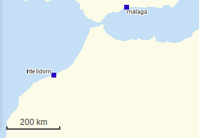
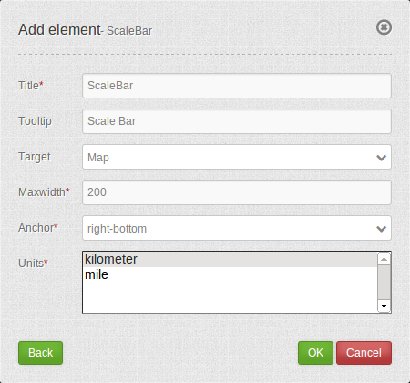

ScaleBar¶
The ScaleBar displays a small line indicator representing the current map scale.
{kind=link}
Configuration¶
{kind=link}
- Title: Title of the element. The title will be listed in “Layouts” and allows to distinguish between different buttons. It will be indicated if “Show label” is activated.
- Tooltip: text to use as tooltip.
- Target: Id of Map element to query.
- MaxWidth: the max width of the scale bar, default 200.
- Anchor: scale bar alignment, default is ‘right-bottom’ (use inline f.e. in sidebar).
- Units: scale bar units ‘kilometer’ and/or ‘miles’ (ml), default [‘km’].
YAML-Definition:¶
tooltip: 'Scale Bar' # text to use as tooltip
target: ~ # Id of Map element to query
anchor: 'inline'/'left-top'/ # scale bar alignment, default is 'right-bottom'
'left-bottom'/'right-top'/ # use inline f.e. in sidebar
'right-bottom'
position: array('0px','0px') # scale bar position, default: x=20px, y=20px
maxWidth: 200 # the max width of the scale bar, default 200
units: array('km') # scale bar units 'kilometer' and/or 'miles' (ml), default ['km']
Class, Widget & Style¶
- Class: Mapbender\CoreBundle\Element\ScaleBar
- Widget: mapbender.element.scalebar.js
- Style: mapbender.element.scalebar.css
HTTP Callbacks¶
None.
JavaScript API¶
None.
JavaScript Signals¶
None.